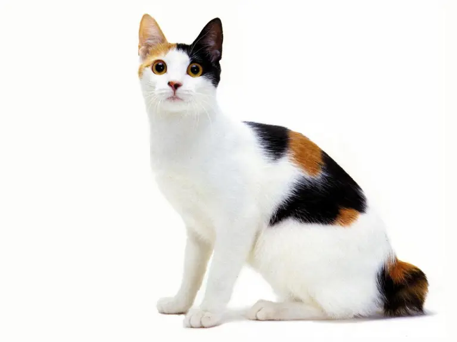

The Japanese Bobtail cat breed is considered the good luck of Japan! This beautiful breed with a unique pom-pom tail will greet you as a small ceramic decoration with a raised, waving paw in many doorways [1], [2], [3], [4]!
Appearance
The Japanese Bobtail cat breed got its name after its distinctive and unique pom-pom tail! Each cat has a slightly different and special pom-pom, no tail is ever the same! The breed is one of the few with a naturally occurring pom-pom tail that is not associated with any skeletal disorder. It is simply caused by the expression of a dominant gene of theirs. Japanese Bobtails come in various colors and patterns, although the most famous one is the “Mi-ke“ color combination. In Japanese, “Mi-ke“ means “three fur“, as the color combination consists of a white body with black and orange patches. They can have any eye color, but those with odd-colored eyes or with blue eyes are especially prized! The Japanese Bobtail cat breed is a shorthair, medium size breed, weighing from 3kg to 5kg. Although, there is a longhair version as well!
Personality
The Japanese Bobtail is a gentle, affectionate, and charming cat breed! They can be quiet, but also talkative! They enjoy companionship and have a loving, outgoing personality! They are a remarkably friendly cat breed, getting along perfectly with children and other pets, often even greeting strangers like old friends. Japanese Bobtails have a playful nature. They love to play with their loved ones, often bringing toys to ask for games of fetch that can seem to go on forever. Being also quite intelligent cats, they will easily learn various tricks! Although, if their humans cannot play with them at the moment, they love to keep them company, following them around, meowing, and asking for attention.
History
The Japanese Bobtail cat breed is a native breed of Japan. It is a natural, and very old cat breed. As with other ancient breeds, there are many legends and traditions surrounding its origin. One legend says that the Japanese Bobtail was originally gifted to the emperor of Japan over 1000 years ago! Another legend says that the first Japanese Bobtails arrived in Japan from China or Korea in the 7th or 8th century when Buddhist monks needed help with rats. Japanese Bobtails have also been featured in ancient Japanese sketches sitting next to Geishas. The Japanese Bobtail's true origin story, unfortunately, remains a mystery. Although, the current genetic analysis shows that the Japanese Bobtail is not actually genetically similar to other Japanese cats. The Japanese Bobtail is a symbol of good luck in Japan. The famous “waving cat“ ceramic figure that is often seen at doorways or windows in Japan and all over the world is in fact a Japanese Bobtail with its distinctive “Mi-ke“ coat coloring. The cat is believed to bring good financial fortune to its family [1], [2], [3], [4].